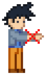
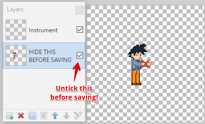

Multiplayer compatible custom instruments!
You can use the below sample image if you want to create your own instrument. The character has been aligned to match your character's position in-game.
If you're creating an instrument using different dimensions than those of the template above, please note that the center of your image will line up with the center of the red cross illustrated below. Custom images may not exceed 96x96 pixels.
The below image can not be used as a template, as it has been resized.
Paint.NET users may use this project file to easily create instruments. Make sure to hide the character layer before saving, and make sure you select the PNG file format!
 